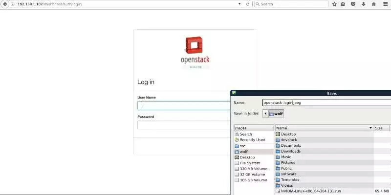
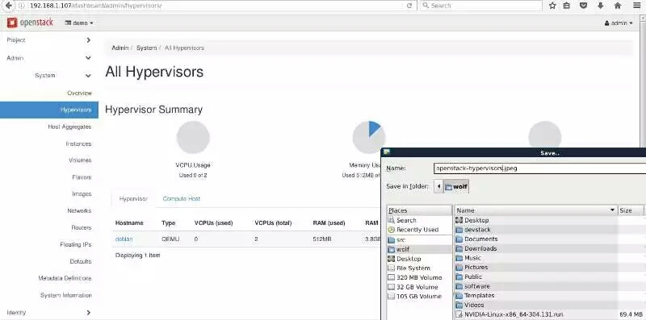
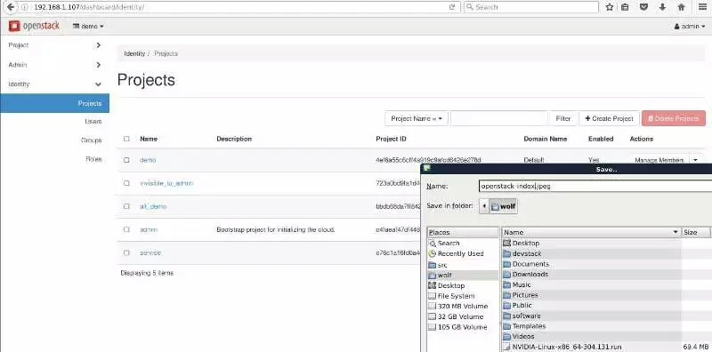

关于openstack这个IaaS项目,很早之前就已经有所闻,只是一时找不到时间来实践。而在chuanbay的时候,由于公司领导希望能进行一些前沿的机器学习技术,当然想到的就是通过虚拟机的方式来实现,至于为什么没有考虑到流行的docker、coreos之类的,主要还是在于这个项目是用python编写的。
而搭建openstack环境最快的方式是通过devstack,当然如果你购买的是第3方的服务其实也是不错的。
在开始搭建之前,我们先对openstack的组件进行简单的介绍:
- nova,计算部分,用于管理虚拟机实例的整个生命周期,根据用户需求来提供虚拟服务,负责虚拟机的创建、开机、关机、挂起、调整、迁移等操作,是openstack中最为成熟的项目。
- swift,对象存储,允许进行存储或检索文件。
- glance,镜像服务,用于虚拟机镜像查找及检索。
- keystone,身份服务,为openstack提供身份验证、服务规则及服务令牌的功能。
- cinder,块存储,为允许实例提供稳定的数据块存储服务。
- horizon,UI界面,采用Django进行开发。
- neutron,网络地址管理,为openstack提供网络连接服务。
下面我们来介绍如何通过devstack来快速搭建openstack环境。
首先最简单的方式就是使用git下载这个项目devstack-install-on-iso,然后进行如下的操作:
./devstack-install-on-iso
这个脚本会首先查找用户的Downloads目录下是否有1个ubuntu-14.04.4-server-amd64.iso的镜像,如果没有则会使用wget从官方网站进行下载。
之后就是一系列的操作,并通过qemu的方式来运行这个镜像。
另外1种方式就是通过每个发行版的仓库的方式来进行安装,比如在launchpad.net上的版本,这种方式安装的版本会比较老些。
如果想实现较为新的版本,我们可以通过github上拉取代码来进行安装,在这里我们安装最新版本newton。
下面我们通过git下来上面的代码:
git clone git@github.com:openstack-dev/devstack.git
然后我们切换到对应的目录下进行如下的命令即可:
git checkout stable/newton ./stack.sh
如果一切都这么简单就好了。由于国内的一些网络之类的问题,你会发现通过上述的方式安装是极其耗费时间的,在这里我们先进行一些优化的处理操作后再进行上述的操作。
首先是加速Python源,为了加快下载的速度,在这里我们采用豆瓣的源而不是使用官方的源:
# emacs ~/.pip/pip.conf
然后填入如下的内容:
[global] timeout = 6000 trusted-host = pypi.douban.com index-url = http://pypi.douban.com/simple/
接着我们对debian的官方源进行修改,我们采用网易的源:
# emacs /etc/apt/sources.list
然后其内容为:
deb http://mirrors.163.com/debian wheezy main contrib non-free ...
接着我们在devstack目录下创建1个local.conf的文件,然后输入如下的内容:
[local|localrc]] DATABASE_PASSWORD=123456 ADMIN_PASSWORD=123456 SERVICE_PASSWORD=123456 SERVICE_TOKEN=123456 RABBIT_PASSWORD=123456
上述的操作是openstack最小化配置,而详细的配置可以查阅。
之后我们再执行./stack.sh文件就会开始安装了。
在这个过程中,本人使用了12M的带宽,耗费了将近1个小时就完成了安装操作。
最后我们来最终的截图:

这里是登录的页面,默认情况下系统给我们生成2个用户admin和demo,然后输入我们之前配置时的密码即可。
接着是登录之后system部分的页面:

我们可以看到此时只有1台虚拟机,主机名称为debian。
最后是项目的描述。

实话说,openstack是挺占用内存的1个项目。本人的4G内存,2核的PC机器在登录都感觉很慢。而在实际生产环境中,整个集群最小的内存必须是16GB才可以比较好的运转。
参考文章: